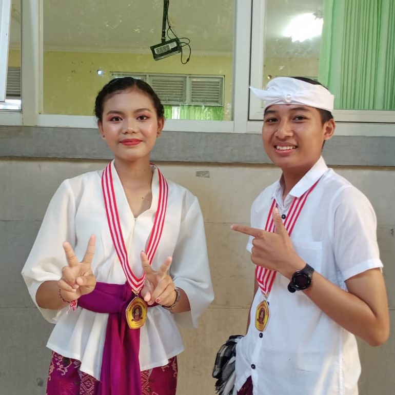
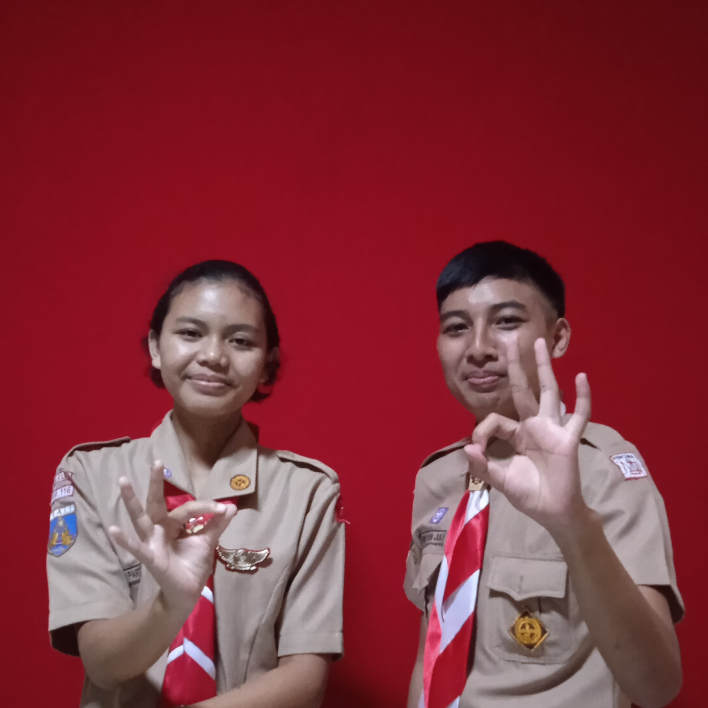
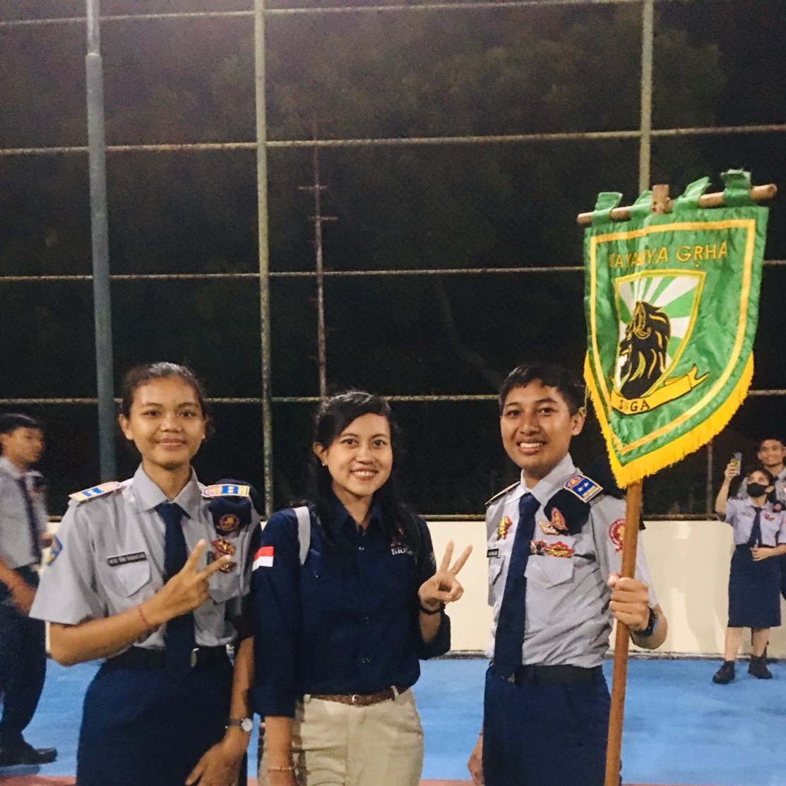

Ada Surat Cuy :)
  Bukak....Bukak...Bukak
Baca sampai lese y boss😆
Sambil nonton anime juga bole :)
Surat akan muncul dalam waktu: 7
For a Special Friend
Hayy...
Baca isi surat Yuni tadi jadi kepengen buat juga :)
Aku juga ada sedikit cerita unik si dulu....Gini jujur aku dulu tu orangnya intovert banget, males buat buka chat selain yg di grup dan gobloknya g berani nyapa temen....akibat dulu salah ngechat, kakel aku chat kirain 1 angkatan :V bahkan aku kena teguran 2 kali lagi....sangadd goblok bukan!
Tapi semenjak 1 semester berlalu aku baru mengenal 1 sama lain...dan sama, aku mau deket ma temen" pertama aku deket ma risma semenjak lomba video ambalan tu, baru Yuni waktu bahas soal fisika yg sangad tidak ramah di otak :) dan hingga sekarang masih ttp deket ma itu" sahajaa...hehehe.
Udah itu aja dulu, kalau dilanjutin sampai besok aku ketik g lese"...wkwkwk
Baca pesan Yuni tadi jadi kepengen ngulang masa" dulu, kala buang" waktu istirahat buat ngambil hal" yg gk pasti :V tapi itulah hidup. Kita harus berguru dgn masa lampau itulah pentingnya belajar sejarah :) Dari aku sama si dan tambahannya tetep setia pada komitmen, jangan sampai mimpi yang terlukis lenyap terbakar oleh kobaran api keputus asaan.
Aku harap selalu berada di jalan yang tepat, berkorban yang baik itu gak masalah yang penting tujuannya untuk mencapai yang terbaik :)
Oh ya, hampir lupa....makasi juga udah ngeluangin waktunya buat nemenin aku ngelalui jalan yang kadang" lempeng, penuh lika-liku bahkan sampai jalan yang benyah latig sekalipun.
Maafin juga segala kegoblokan dan kesalahanku dulu sampai detik ini...hehehe
BTW aku juga ada kutipan buat Yuni,
"Bulan nampak gelap tanpa adanya sinar dari matahari, begitupun dengan jiwa ini tanpa adanya support dari seseorang sulit untuk bersinar dari kegelapan."
Sampai disini dulu dah yaa....g baik kalau berlebihan, heheeh
Have a Nice Day My Special Friend
From your wayward brother,
Wayan Juli.
Note: tekan kirim untuk membalas!📅